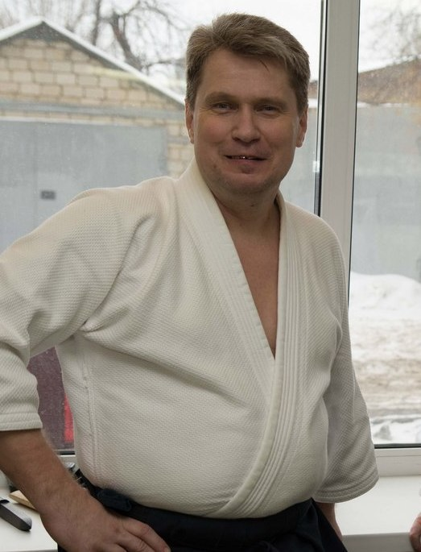

|  |
Петров Станислав
4-й дан айкидо айкикай, экзаменатор Кристиан Тиссье (единственный европеец с 8 даном). Руководитель СРОСО ФААСО. Организатор и участник всех семинаров по айкидо айкикай в Саратове с 1994 г. Участник семинаров: Кристиана Тиссье, Сейширо Эндо, Патрика Бенези, Паскаля Гиймана, Бруно Гонзалеса, Матсуо Масадзуми, Джузеппе Рульони , Алена Тендрона, Стефана Бенедетти,Михаила Сафронова,Вячеслава Матвеева, Михаила Авербаха, Михаила Орлова. Образование: СГУ (биофизика), РГУФК (инструктор айкидо), СГУ (педагог-дефектолог). Автор научных работ по айкидо. Автор и ведущий специалист единственной в России программы по айкидо для слепых и слабовидящих детей "Aikido for all". Главный инструктор по айкидо Саратова и Саратовской области. Председатель приемной комиссии по айкидо Саратовской области. Куратор региональных программ по айкидо в Татищево, Калининске, Камышине. Инструкторский стаж с 1993 г. Подготовил ВСЕ черные пояса по айкидо в Саратове (11 вторых данов, 52 первых дана). ВК vk.com/saratovaikido ОК ok.ru/profile/180318180506 FB www.facebook.com/stanislav.petrov.98892 |